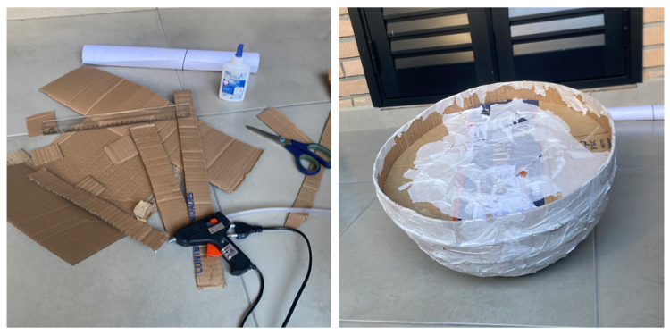
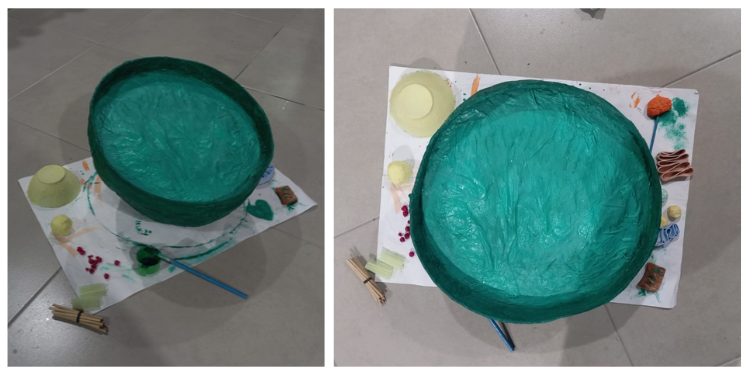
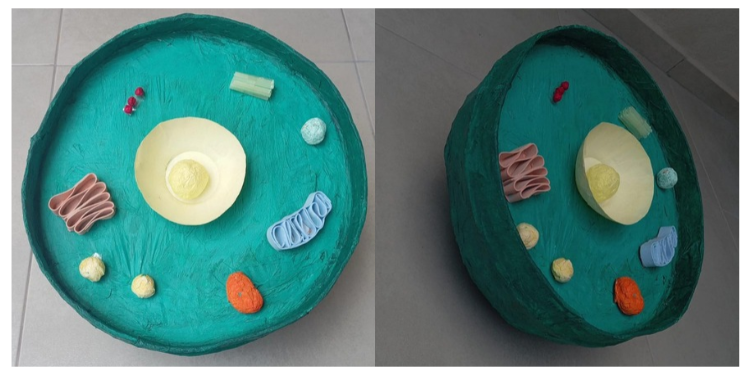

Nossa maquete de uma célula
Etapas do processo:
Nossa maquete foi constituida por materiais reciclàveis, voltada para sustentabilidade, praticando a regra dos 3 Rs é um conjunto de práticas sustentáveis e o consumo consciente. Reduzir; Reutilizar e Reciclar.

Começamos juntando materiais e planejando como e qual célula seria. Decidimos que seria uma célula eucarionte animal, e começamos a montar a estrutura com papelão, cola quente, papel crepom com água e cola.

Depois fizemos cada uma das organelas presentes na célula com e.v.a., papel colorido e pintamos tudo com tintas coloridas. (Nunca foi tão dificil achar um lugar que tivesse tinta verde ou algo assim pra vender quinta a tarde... apesar disso ter sido o unico material que compramos durante a confecção.)

Por fim juntamos e indentificamos tudo, e também finalizamos o site.